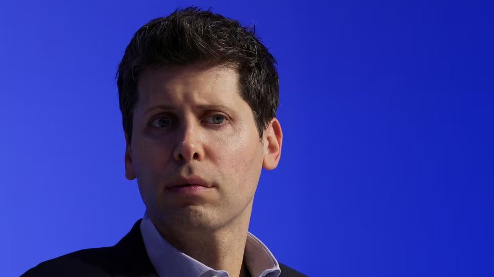

OpenAI appoints ex-Twitch boss as interim CEO; Altman joins Microsoft

20 November 2023
OpenAI has appointed ex-Twitch boss Emmett Shear to lead the startup, replacing Sam Altman who will join the company's top backer Microsoft (MSFT.O) to lead a new advanced AI research team, the CEO of the software giant said late on Sunday.
"We look forward to getting to know Emmett Shear and OAI's new leadership team and working with them," Microsoft CEO Satya Nadella posted on social media platform X. He added Microsoft remains committed to its partnership with OpenAI.
Shear was named interim CEO, a person briefed on the appointment told Reuters.
The decision not to reinstate Altman as CEO of the company behind ChatGPT has confounded efforts by investors and employees of the firm to steady the ship by bringing him back after the board fired him on Friday, a surprise move that rocked the tech world.
They fear his abrupt sacking could lead to a mass exodus of talent and impact an upcoming $86 billion share sale.
Nadella said Altman would join Microsoft to "lead a new advanced AI research team".
Reuters earlier reported that Altman was discussing a possible return to OpenAI and changing the company's governance structure, even as he considered launching a new AI venture.
Altman and Greg Brockman, who stepped down from the OpenAI board as chairman as part of the management shuffle, joined executives at the company's headquarters on Sunday after then interim CEO Mira Murati told staff she invited Altman, The Information earlier reported on Sunday.
Nadella said Brockman would also join the software company.
Altman posted an image of himself on X on Sunday wearingan OpenAI guest badge with the caption: "first and last time i ever wear one of these." In a separate post on X, he reshared Nadella's message with a comment "the mission continues".
Brockman quit over Altman's firing on Friday. Their departures blindsided many employees who discovered the abrupt management change from an internal message and the company's public blog.
Some researchers including Szymon Sidor have also left the company following the CEO change, two people familiar with the matter said. Sidor confirmed quitting.
The Information first reported the appointment of Shear as interim CEO.
Shortly after the internal announcement of Shear's appointment, distraught employees "streamed out" of OpenAI headquarters in San Francisco, The Information reported.
Dozens of staffers internally announced they were quitting the company on Sunday night, it said, citing a person with knowledge of the situation.
OpenAI kicked off the generative AI craze a year ago by releasing ChatGPT. The chatbot became one of the world's fastest-growing software applications.